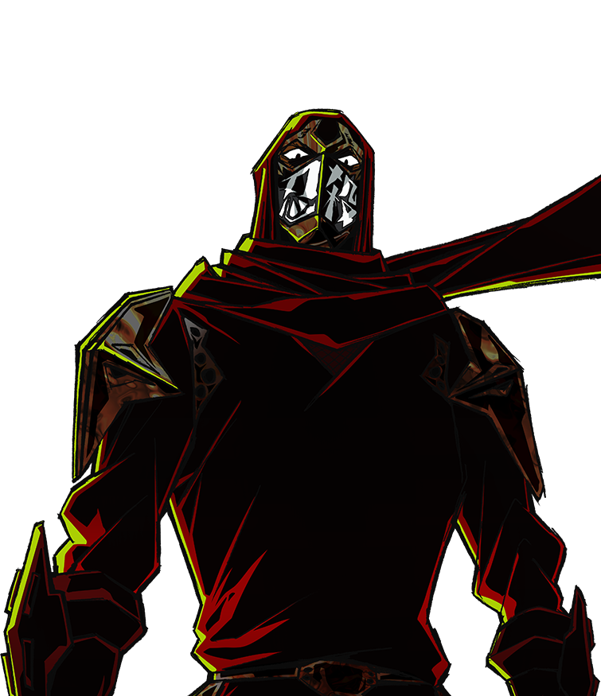

BALANCE & PLAYER VOICE
卡池观察
卡牌选择、战斗使用与玩家反馈。
对局统计 · 未连接玩家反馈 · 等待同步公开战报 · 等待同步读取数据状态…
近期对局
对局 通关先看样本，再看比例。
抓取率 = 选中次数 ÷ 被提供次数。比例与分母同时查看，低于 20 次提供会提示小样本；20 次也不代表已足够下结论。
持有率来自结束牌组；持有通关率是相关性，不能单独证明卡牌强弱。
卡牌明细 0
原生奖励选择记录。点击卡名查看抓取楼层、升级、移除及战斗使用。
仅包含启用数据分享并成功送达的已完成对局；不会代表所有玩家。联机对局去重后按忍者杀手角色匹配选择记录。抽到与打出次数来自新版逐战斗汇总，基础与升级合并；生成牌可能不经抽牌而打出，因此不把打出÷抽到当成概率。
BALANCE ANALYSIS
平衡图表
暂无相应测量。新数据送达后会自动更新。
查看图表数据与置信区间
| 分组 | 统计值 | 样本 n | 95% 置信区间 |
|---|
忍杀机制与卡牌战斗表现
仅新版完整测量。伤害与生成格挡分别展示；每能量伤害不含免费打出的能量分母，也不代表卡牌全部价值。A10 分组需至少20场有效A10对局，公开页面不提供玩家身份查询。
| 来源 / 基础与升级牌 | 涉及战斗 | 结算次数 / 效果量 | 直接伤害 / 生成格挡 | 每实付能量伤害 |
|---|
暂无新版机制测量。
ANONYMOUS BATTLE REPORTS
公开战报
逐场记录由玩家另行授权；仅保留90天。汇总授权不会公开战报。联机未授权玩家明细标记为未采集。
来自玩家的反馈
玩家确认公开后提交的原文。截图和日志仅作者可见。